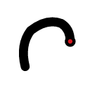
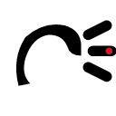
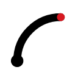

Local observability for AI coding sessions. Watchman at Bifröst. Six mark concepts across Horn / Horizon / Arc / Monogram directions, per references/heimdall-logo-brief.md.
Cleanest Gjallarhorn silhouette — a filled crescent, tip lower-left, bell opens upper-right. Red pip at bell mouth = "the horn has sounded." Primary candidate.

Outline stroke variant. Bell terminus renders as a solid disk with the accent pip centered — reads as "signal lamp." Slightly more industrial than v01.

Horn with three emission rays. Most literal "alert fired" reading. At 16px the rays may merge with the bell — inspect actual-size preview carefully.
Himinbjörg: hairline horizon + watchtower notch + watcher dot. Low distinctiveness risk (reads as generic UI at small scale), but echoes DESIGN.md's "instrument panel" mood directly.

Quarter-circle + origin dot + pip at tip. Reduced Bifröst / radar sweep. Competes with the observability "wave" cliché but distinguishes via geometric precision.
Included per brief as the expected failure case. Dots merge into a blob at 16px — the H shape is lost. Verifies the brief's dot-matrix warning.